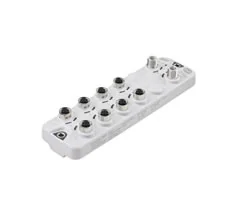
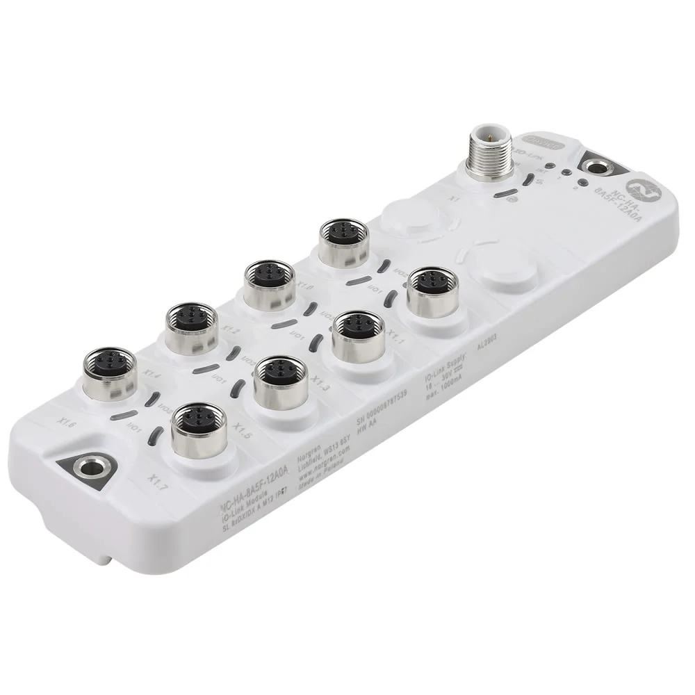

4 mã sản phẩm
Danh sách canonical dẫn về trang chi tiết từng part number.
IO-Link master và I/O module Norgren tập trung tín hiệu từ cảm biến – cơ cấu chấp hành và kết nối lên mạng điều khiển nhà máy qua fieldbus. Khi chọn, bạn cần xác định số cổng IO-Link, chuẩn fieldbus (ví dụ PROFINET, EtherNet/IP), cấp bảo vệ IP, kiểu đầu nối nguồn/mạng và số kênh I/O số, nên đối chiếu part number với datasheet trước khi báo giá để khớp với kiến trúc mạng hiện có. Nếu bạn đang mở rộng hoặc thay module trên hệ thống, hãy gửi mã cũ và chuẩn mạng đang dùng để chúng tôi xác nhận biến thể phù hợp. Trang giúp đội mua hàng và kỹ sư tự động hóa tại Việt Nam tra cứu nhanh theo mã, so sánh cấu hình cổng và tìm phụ kiện liên quan như cáp nguồn, cáp mạng, đầu bịt và gá lắp. Gửi part number, BOM hoặc sơ đồ mạng để được tư vấn đúng số cổng, chuẩn fieldbus và báo giá chính xác.

Để chọn đúng IO-Link master, hãy gửi chuẩn fieldbus của hệ thống, số cổng IO-Link cần và số kênh I/O số. Nếu thay module cũ, gửi part number hoặc ảnh nhãn để đối chiếu nhanh. Cấp bảo vệ IP và kiểu lắp (trong tủ hay ngoài máy) cũng cần khớp môi trường, nên cho biết vị trí lắp. Chúng tôi xác minh datasheet về cổng và chuẩn truyền thông trước khi báo giá, đồng thời liệt kê cáp và phụ kiện đi kèm để bạn lắp đặt đồng bộ.
Danh sách canonical dẫn về trang chi tiết từng part number.
Datasheet, brochure, installation guide hoặc tài liệu liên quan.
Mã liên quan giúp đặt đồng bộ và tránh thiếu vật tư khi lắp.
Hiển thị 4 mã thuộc category này.
IO-Link master, PROFINET interface, x1 5 pin M12 plug, x11 5 pin M12 sockets

IO-Link I/O module, Auxillary power, x2 4 pin M12 plugs, x8 4 pin M12 sockets

IO-Link I/O module, Standard, x1 4 pin M12 plugs, x8 4 pin M12 sockets

IO-Link master, EtherNet/IP interface, x1 5 pin M12 plug, x11 5 pin M12 sockets
Tùy mã. Bạn gửi chuẩn mạng đang dùng và part number; chúng tôi đối chiếu datasheet Norgren để xác nhận biến thể fieldbus trước khi báo giá.
Gửi số thiết bị IO-Link cần đấu; chúng tôi tư vấn master có số cổng phù hợp, dự phòng mở rộng, theo thông số kỹ thuật.
Nhiều mã có cấp bảo vệ IP cao cho lắp ngoài tủ. Gửi vị trí lắp để chúng tôi chọn mã đúng cấp bảo vệ.
Tùy đầu nối. Chúng tôi xác nhận theo datasheet và báo giá kèm phụ kiện liên quan như cáp nguồn, cáp mạng và đầu bịt cổng.